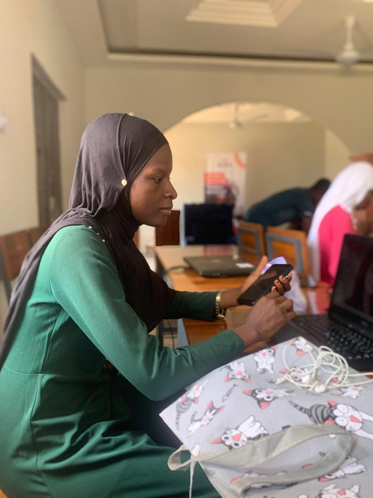

From UDS Lecture Hall to Laptop: The Real Guide I Wish I Had Before Starting Tech
Published on: by Zakia Suglo Hamza | UDS Computer Science Student

Introduction
As a Computer Science student at UDS, I thought classes would teach me everything about tech. Reality check — lectures give you theory, but choosing your niche, building on your niche, and staying consistent is a whole different lesson. This is the guide I wish someone gave me earlier.
The 3-Step Filter That Saved Me
I was jumping from web development to data science to app dev every week and I was eager to learn just any programming Language. Here's what finally gave me clarity:
- Explore for 7 Days: Watch beginner videos on 3 fields you like.
- Build Tiny: Don't watch more — build a one-page website, a calculator app, a simple design.
- Listen to Your Energy: Which project made you forget to check your phone? That's your niche.
Conclusion
You don't need a perfect laptop or perfect grades to start. You need curiosity and one small project a week. Most Importantly you should always put in your best and challenge yourself with tasks for a better result. If a girl from UDS can figure it out between lectures and hostel life, so can you.